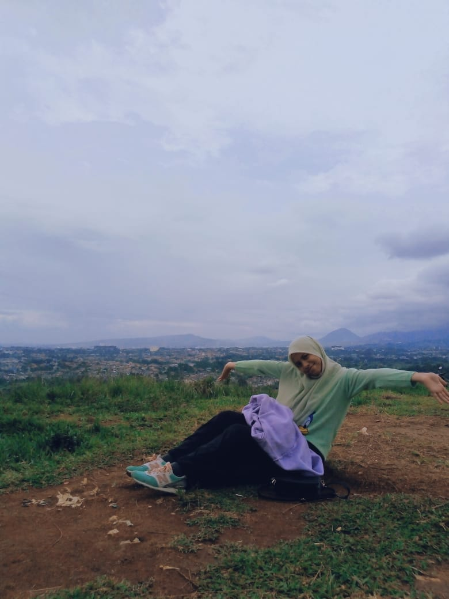
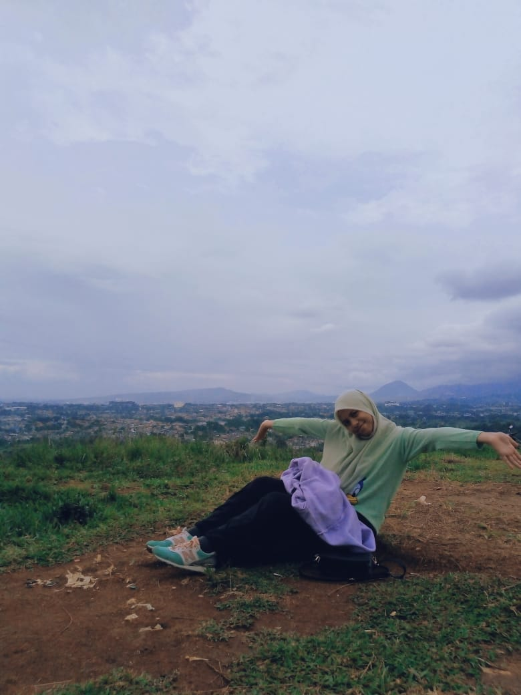
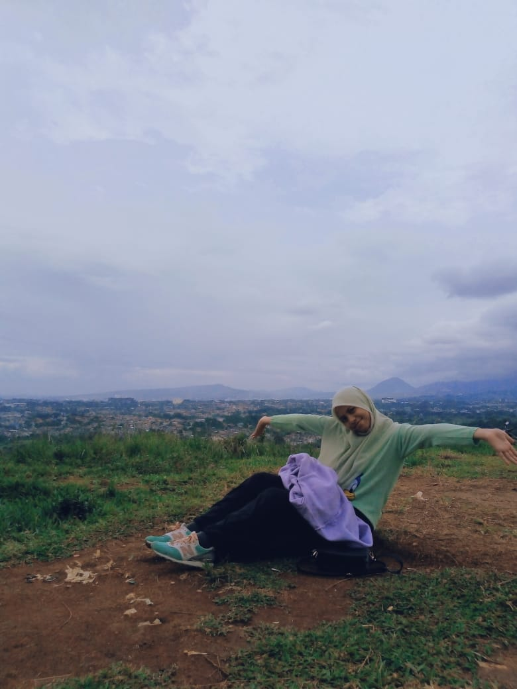

|  |
|
| Nama Lengkap | Zahwa Keysya |
| Nama Panggilan | Zahwa, Jawa, Jahwa |
| Tempat, Tanggal Lahir | Bogor, 09 Maret 2005 |
| Usia | 16 tahun |
| Agama | Islam |
| Kelas | XI.7 |
| Sekolah | SMK-SMAK Bogor |
| Hobi | Menonton dan menulis |
| Alamat | Jl. Layungsari 4 Gg. Kenanga 2 RT03/19 |
Selama Pandemi Covid-19 ini pembelajaran dilakukan secara daring atau disebut Pembelajaran Jarak Jauh. Rasanya sedih tidak dapat menikmati kelas 11 yang dikata orang tingkatan paling seru ini dengan pembelajaran online. tetapi keaadaan memaksa, dan mau tidak mau kehidupan harus terus berjalan. Walaupun jujur saja, rasanya lebih menyenangkan offline, meskipun lebih capek fisik. Dulu rasanya ingin sekali libur sekolah, tetapi sekarang rasanya rindu sekali pergi sekolah, naik angkot, pulang malam dan hal kecil lainnya. Tidak pernah terbayangkan oleh saya sebelumnya bahwa hal hal kecil yang sehari-hari saya lakukan ini dapat saya rindukan.
Sudah 1 tahun pembelajaran online ini berlangsung. Menurut saya pembelajaan online ini mengharuskan murid lebih ekstra dalam belajar sendiri. Saya juga lebih paham pembelajaran lewat offline. Karena tidak bertemu secara langsung juga, jadi kurang akrab dengan teman sekelas. Saat pembelajaran yang kurang dimengerti pun, biasanya jika offline dapat langsung bertanya pada guru yang bersangkutan ataupun teman sebangku. Hal yang paling saya rindukan dari sekolah offline adalah suasana sekolah dan kelas, jika online tiap hari suasananya hanya kamar. Adapun dari pembelajaran online ini yang membuat saya stress adalah melihat to-do di classroom, rasanya tidak habis habis tugasnya. Tetapi sisi positif daring ini saya lebih melek teknologi dan terbiasa menggunnakan beberapa aplikasi seperti zoom dan google classroom. Saya uga jadi lebih dekat dengan keluarga karena sepanjang hari dirumah serta dapat melakukan hobi saya.